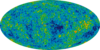

cosmic-background-radiation

Definition: Cosmic background radiation is electromagnetic radiation that fills all space. The origin of this radiation depends on the region of the spectrum that is observed. One component is the cosmic microwave background. This component is redshifted photons that have freely streamed from an epoch when the Universe became transparent for the first time to radiation. Its discovery and detailed observations of its properties are considered one of the major confirmations of the Big Bang. The discovery (by chance in 1965) of the cosmic background radiation suggests that the early universe was dominated by a radiation field, a field of extremely high temperature and pressure.The Sunyaev–Zel'dovich effect shows the phenomena of radiant cosmic background radiation interacting with "electron" clouds distorting the spectrum of the radiation.
Source: Wikipedia
Wikipedia Page (Something wrong with this association? Let us know.)
Wikidata Page (Something wrong with this association? Let us know.)
Occurs in: